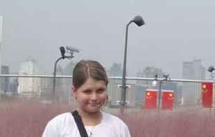

Кто ведёт карту谁在做这张地图
Курносенко Вера Витальевна, 12 лет
薇拉·维塔利耶芙娜·库尔诺先科，12岁

В Шанхае живу около десяти лет. Сейчас 7 класс международного отделения школы Цзиньцай, Пудун.
В 2023–2024 учебном году была в 4 классе школы Янцзин Цзюйюань. В 2025–2026 училась в 6 классе SUIS Peiming, район Цзинъань. С 19 сентября 2025 года заочно учусь в Международной школе завтрашнего дня, Москва. В этом году по русской программе 6 класс, история есть.
Перед классом говорю по-китайски. Летом 2026 года делала презентацию про Далянь. Это были каникулы у моря, не этот проект. У Даляня есть свой русский след, Дальний и Порт-Артур. Если сниму настоящие места в Люйшуне, добавлю отдельный рассказ. Туристическую улицу за старый город выдавать не стану.
В проектах ПМИФ «Герои Отечества» и АНО «Герои Отечества» раньше не участвовала.
Домашний адрес, телефон и где я хожу после школы на сайт не кладу. Написать проекту можно в сообщество ВК или в Telegram. Это моя карта, взрослый в семье помогает с сайтом. Отдельного научного редактора нет.
我在上海住了大约十年。现在在浦东进才中学国际部读七年级。
2023到2024学年读过四年级，学校在俄文页上写了。中文校名我怕拼错，先不写死。2025到2026在静安 SUIS Peiming 读过六年级。2025年9月19日起，在莫斯科明日国际学校远程上课。俄国大纲这边今年是六年级，有历史课。
在班上我用中文讲。2026年夏天做过一次大连暑假的演示，那是海边的假期，不是这个历史项目。大连有自己的俄国痕迹，达尔尼和旅顺。等我拍到旅顺的真地方，再另写一篇。不会把旅游街说成老城。
以前没有参加过“祖国英雄”的项目。
家里的地址、电话、我放学以后去哪儿，这些不放在网站上。要给项目写信，用VK社区或Telegram。地图是我的，家里的大人帮我把网站放上网。还没有单独的学术编辑。